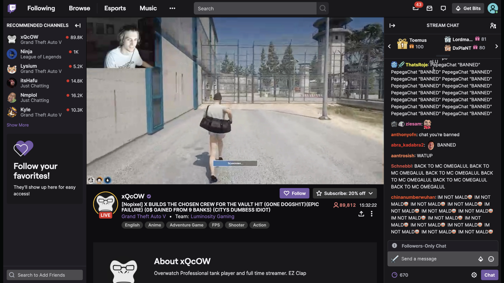

Qingli Zeng
with co-authors Sandeep Chandukala, Hai Che, Lifeng Yang
Hebrew University of Jerusalem
In live streaming, the anchor's voice is the only continuous channel of communication.
How does how they speak — not what they show — drive viewer engagement?
global live-streaming market, growing 25% YoY
annual subscription earnings for top streamers
Twitch, YouTube Gaming, and Kick competing fiercely
isolating vocal cues from other engagement drivers

| Immediate — Chats | Sustained — Subscriptions | |
|---|---|---|
| What | Real-time messages | Paid recurring commitment |
| Nature | Impulsive, social | Deliberate, financial |
| Drives | Community vibe | Revenue, loyalty |
These are not the same thing. They likely respond to different vocal cues.
Video content controls (within- and across-scene dynamics) sit alongside as exogenous controls.
Social Approval Theory — Bundy & Pfarrer (2015)
Emotional appeals receive higher evaluations → drives sustained commitment.
Social Influence Theory — Cialdini (2006)
Persuasion effects depend on social context → drives moderation.
Together: different vocal cues map to different engagement types — and the social environment shifts these effects.
enthusiasm,
emotional intensity
tension, pressure,
audible effort
analytical thinking,
information processing
Each carries a distinct social signal.
Anchor's vocal energy — enthusiasm, loudness range, and pitch dynamics in the audio signal.
Aggregated per minute from second-level audio measurements; standardized within streamer to remove baseline differences.
Audible vocal stress — indexed from jitter, shimmer, voice quality irregularities, and prosodic markers of tension.
Interpreted as a signal of authenticity / emotional investment — see Finding 02.
streamers, ~35% of platform viewership
of streaming content
streamer × stream × minute
Negative Binomial regression with Gaussian Copula endogeneity correction
Video dynamics, visual attributes, audio quality, lagged outcomes, anchor fixed effects.
Addresses reverse causality (viewers shape anchor's voice) without needing an external instrument.
| Vocal cue | → Chats | → Subscriptions |
|---|---|---|
| Expressive Energy | ns | + |
| Stressed | + | + |
| Cognitive | ns | + |
Chats and subscriptions don't share the same drivers.
Anchors can't optimize one strategy for "engagement" as a single goal.
Contrary to intuition:
Interpretation. Stress in the voice signals authenticity and emotional investment.
In a polished media landscape, audible effort is a credibility marker.
Vocal strategy should adapt to context, not be one-size-fits-all.
| Audience | Strategy | Why |
|---|---|---|
| New anchors | Match sentiment | Sentiment amplifies energy → engagement for small audiences |
| Established anchors | Differentiate | Popular channels chat themselves; reserve energy for conversion |
| All anchors | Leverage stress carefully | Stress drives engagement, but excess tension hurts subs in big channels |
Nov 2025 — Jan 2026
Twitch VODs, ~22 TB of video
AWS S3; per-minute panel structure preserved
From proprietary closed-box to open-source, fully reproducible pipeline.
| Construct | Original | New |
|---|---|---|
| Audio features | Nemesysco QA5 | openSMILE eGeMAPSv02 (88 features) |
| Video dynamics | SSIM only | SSIM + scene detection + CLIP embeddings |
| Audio quality | MOSNet | SQUIM + LUFS + voice activity + SNR |
| Linguistic controls | Chat sentiment | + transcript: speech rate, hesitations, lexical diversity, F–K grade |
Transparent, replicable, finer-grained, extensible.
Qingli Zeng · Hebrew University of Jerusalem